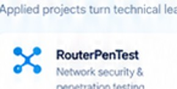
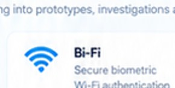
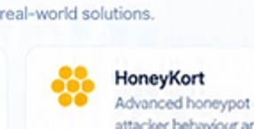

OPERATIONS
SOC & Incident Response
Monitoring, SIEM, triage, investigation and practical incident-response exercises.
The NCST Cybersecurity Academy develops future cyber professionals through education, hands-on training, advanced labs, applied research and strategic partnerships — strengthening a safer and more resilient digital Bahrain.
A practical learning model that connects structured education with hands-on labs, professional training, industry certifications and national initiatives.
Progressive student pathways from IT foundations to ethical hacking, SOC, cloud security and malware analysis.

Applied upskilling for government, companies and SMEs through hands-on courses and real-world environments.

Controlled environments for defence and offence exercises, digital forensics, malware analysis and cloud security.

Industry-aligned pathways connected to CREST, OSINT, cloud security and professional certifications.
A clear progression from foundations to advanced applied practice.
National programs that develop talent, raise awareness and generate research and solutions for a more secure Bahrain.

Awareness and applied technical training covering network security, threat awareness, cloud and AI-related risks.
Support a safer Bahrain →
A multi-sector platform engaging students, young professionals and industry to develop cybersecurity solutions.
View initiative →
A structured publishing platform for practical cybersecurity analysis, research insight and evidence-based recommendations.
Read the latest papers →Network security & penetration testing

Secure biometric Wi-Fi authentication

Advanced honeypot & attacker behaviour analysis

Vulnerability-focused security solution
Monitoring, SIEM, triage, investigation and practical incident-response exercises.
Identity, configuration, logging, risk and hands-on defensive cloud practice.
Standards, controls, risk, implementation evidence and compliance-oriented practice.
The Academy works across government, higher education, industry and technology providers to strengthen national capability and opportunity.

Practical capability for security operations teams.

Innovative solutions and emerging talent.

Practical knowledge and recommendations.
Explore programs, training, research and partnership opportunities with the Academy.